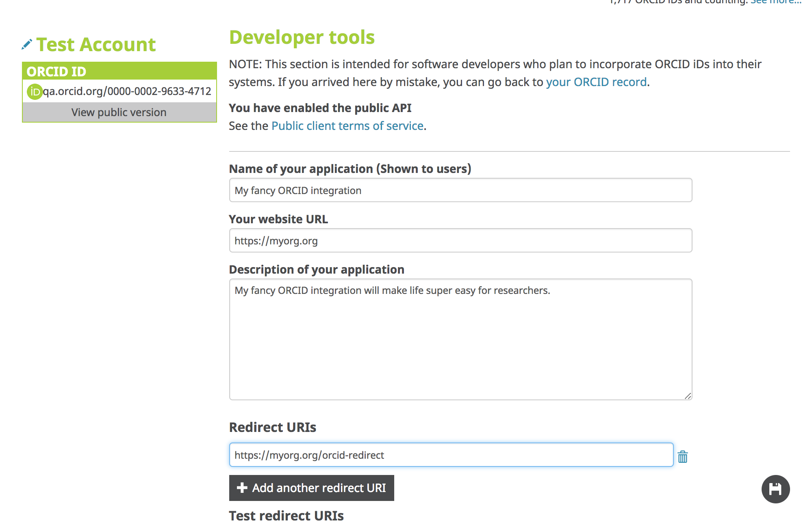
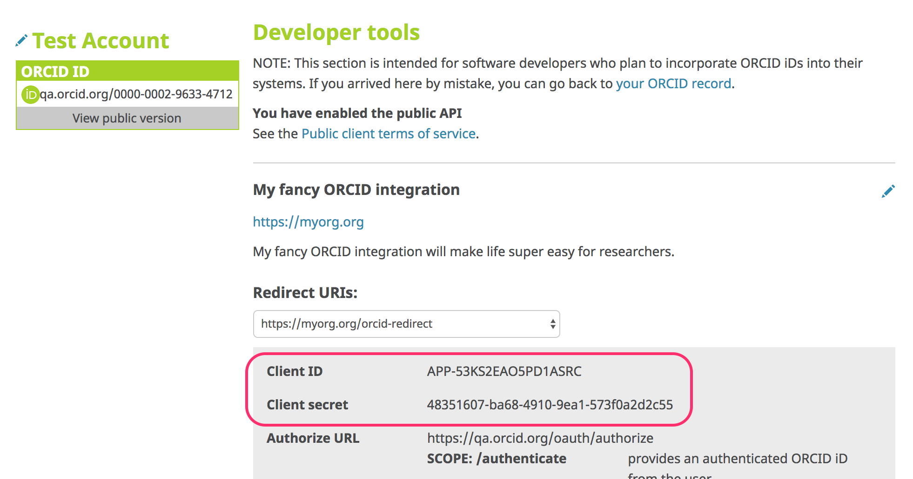
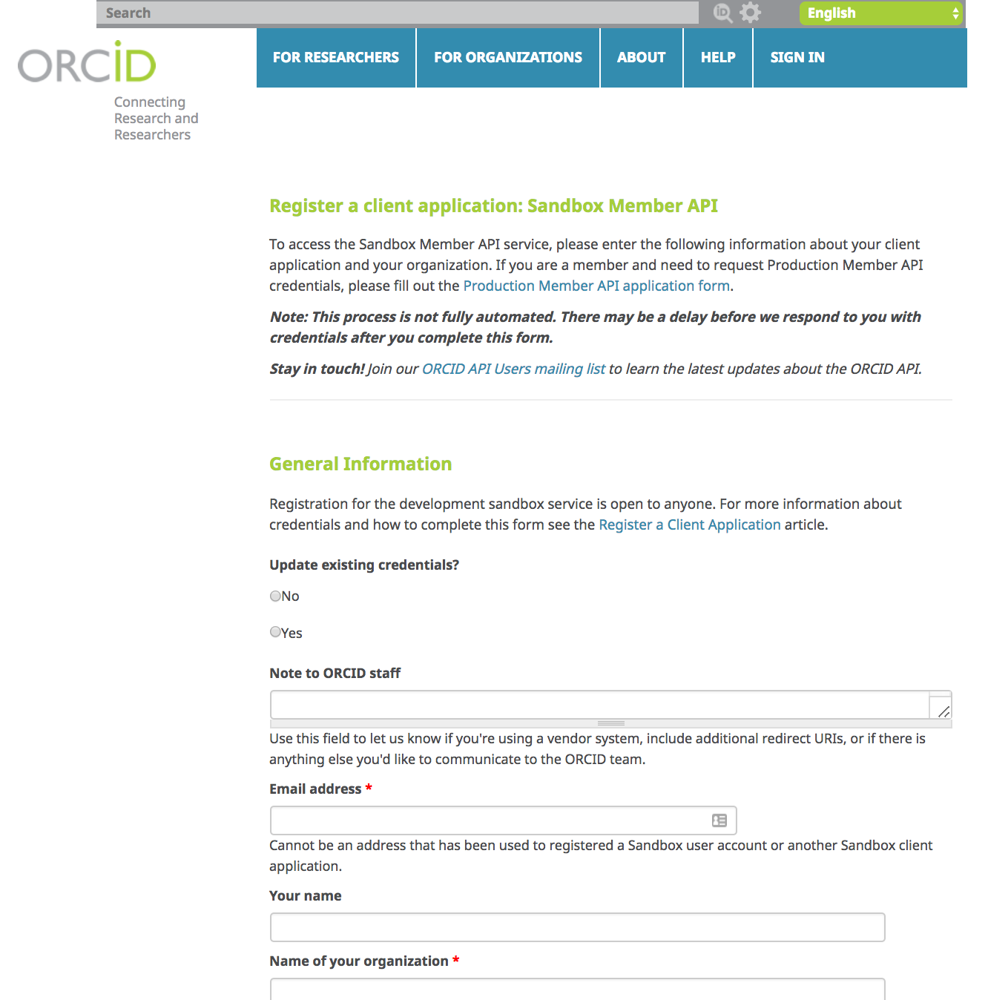

2. Accessing ORCID APIs
API Environments
Sandbox
| User interface | https://sandbox.orcid.org/signin |
| Public API | https://pub.sandbox.orcid.org |
| Member API | https://api.sandbox.orcid.org |
Sandbox vs Production:
- Sandbox sometimes has features/changes that don't exist yet in production
- Sandbox has less compute power, fewer servers (slower, less reliable)
- Sandbox only sends emails to mailinator.com addresses
- Import wizard tools for works, funding, etc don't work in the Sandbox
- Menu links to informational content (For Researchers, For Organizations, About, Help, etc) don't work in the Sandbox
- Sandbox doesn't contain production data
Production
| User interface | https://orcid.org/signin |
| Public API | https://pub.orcid.org |
| Member API | https://api.orcid.org |
API credentials
To use any of the ORCID APIs, you'll need credentials consisting of a client ID and a client secret.
Public API
-
Visit the Developer Tools section of your ORCID record:
- Sandbox: https://sandbox.orcid.org/developer-tools
- Production: https://orcid.org/developer-tools

-
Fill out the form
 -
Get API credentials!

Member APIs
Sandbox
-
Visit https://orcid.org/content/register-client-application-sandbox
-
Fill out the form
 -
Wait patiently for an email from the ORCID support team, which will contain instructions for retreiveing your credentials.
Production
Visit https://orcid.org/content/register-client-application-production-trusted-party and complete the form.
Members are required to test their applications against Sandbox and complete a review before receiving Production credentials.
All member integrations need to meet the requirements on the Member API Credential Checklist
For this workshop, we'll use a set of demo set of Sandbox member API credentials:
client_id: APP-XA6KUTFCVQL0622C
client_secret: 7c8d6b1b-401b-4f5d-9b8b-b8108c6e197c
(Demo client secret created for this workshop - do not share API client secrets!)